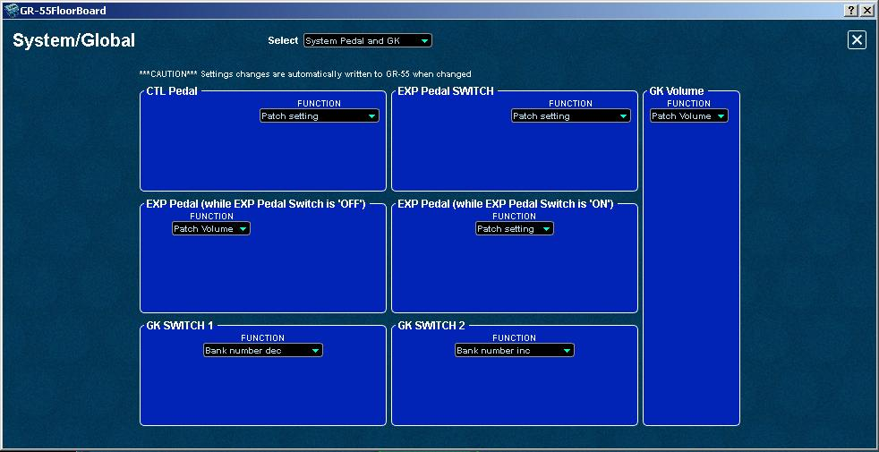

GR-55
FloorBoard Editor
Help
IndexEditing Controller Assignments
The
GR-55 FloorBoard Editor uses three panel types to configure controller
assignment functions to the GR-55's onboard and GK controllers, as
follows:
- SYSTEM (GLOBAL) Pedal/GK - To globally assign control over all patches for specified GR-55 parameters to individual Pedal/GK controllers.
- MASTER (PATCH) Pedal/GK - To assign control within individual patches for specified GR-55 parameters to
individual Pedal/GK controllers.
- ASSIGNS 1-8
- To assign control of additional GR-55 parameter "TARGETs" within
individual patches to Pedal/GK controllers or external MIDI
control via equipment/software (all "SOURCEs").
This page will describe how to work with the controller assignments.
In MASTER (PATCH) control mode, described in "Control Modes" below, there are eight ASSIGNS with well over 100 assign options, times 297 user patches, for thousands of possible combinations. Therefore,
it is important to have a "controller strategy" (whether simple or
complex), so you know what happens when you assign and use a controller. The
GR-55's extensive controller options enable extremely unique sounds and controls. In practice, you may use only a few controller
assignments and that's not so hard to set up. If you want to keep
things
really simple, you can just stay with the factory presets until you're ready
for more. Before you start experimenting, always
do a system backup to computer and/or to the internal USB flash drive - a good practice for away gigs. That way you can just
restore settings to get back where you were if things should go wrong during experimentation.
By
default, Roland ships the GR-55 with several controllers preset in PATCH Mode. Here's how they
describe it in the owner's manual:
- "When the GR-55 is shipped, each patch assigns the pedals to the functions that are most useful for that particular patch."
Controllers
do not have to remain at the factory default settings though. You can set them to always control the same parameter, or by using controller assignments, to control different parameters on each patch.Pedal/GK Controllers
Pedal/GK controllers
are the pedals and switches on the GR-55 itself and those on the
GK wart or built into GK equipped guitar controllers - like the Roland
Ready Fender, Godin, PRS, your own custom guitar with GK-KIT, and other
13-pin guitars. The controllers are listed here with their factory default settings:
- CTL (footswitch - default varies by patch)
- EXP (LED is off - default is volume, varies by patch)
- EXP ON (LED is on - default varies by patch)
- EXP SW (switch OFF/ON - default changes the EXP PEDAL mode off/on)
- GK Volume (knob - default is volume)
- GK S1 (switch - default is bank dec.)
- GK S2 (switch - default is bank inc.)
Control Modes
Each controller described above can be
independently configured to operate in either of the two following control modes:
- SYSTEM (GLOBAL) - for "simplicity"
- The controller operates system wide and always does the same thing on every patch.
- The GLOBAL Mode settings override all conflicting PATCH level controller assignment settings
- To use a controller this way, select it on the System/Global > System Pedal and GK panel (in the SYSTEM tab on the GR itself). You're done now. Go play guitar.
- Otherwise, on the System/Global > System Pedal and GK panel, set the controller to "Patch setting" to delegate the controller to the MASTER (PATCH) level controller assignments to use the controller in different ways on every PATCH, and then set the MASTER PEDAL/GK and/or ASSIGNS settings for that controller on every PATCH.
- MASTER (PATCH) - for "flexibility"
- The controller has different settings for each patch.
- Use the MASTER PEDAL/GK and ASSIGNS settings (in the MASTER tab on the GR itself) to configure PATCH level controller assignments.
- IMPORTANT: It is possible to configure PATCH Mode settings in ASSIGNS 1-8 that may contain parameters that conflict with other numbered
ASSIGNS 1-8 settings or Global Control Mode settings, in which case if used together, you may experience
unusual or even undesirable behavior.
GLOBAL Mode Configuration
To configure the controller assignment modes, open the editor's System/Global panel by clicking the SYSTEM button at the top of the editor's main panel:

The System/Global panel opens. To open the System Pedal and GK panel, click on the Select field (at the top center) and pick System Pedal and GK.

There
are seven System Pedal and GK controller sub-panels. One for each of the Pedal/GK controllers described above, and each sub-panel with a FUNCTION field from
which you select the function to assign to the controller.
IMPORTANT: This panel sets GLOBAL level controller assignments and overrides any conflicting PATCH level controller assignments.
To enable GLOBAL Mode for a controller, select the global FUNCTION for that control to any desired setting except "Patch setting", which delegates the specified controller to PATCH level control, requiring further configuration on the Master level PDL/GK and ASSIGNS 1-8 panels for individual patches. In the screenshot above, the CTL Pedal FUNCTION is set to "Patch setting", delegating control of the CTL Pedal to Master (PATCH) level.
GK Volume and EXP Pedal System/Global Control Functions
The GK Volume and EXP Pedal are control
potentiometers and their available FUNCTIONS are similar. The CTL Pedal, EXP Pedal Switch, and GK 1 &
2 switches control other mutually similar functions, and are described separately.
There are multiple global FUNCTIONS that can be assigned to the GK Volume or the EXPs, including:
- OFF
- The control does nothing...never.
- Patch setting - Special: This delegates the selected controller to the Master PATCH level Pedal/GK settings.
- Patch Volume - The GK Volume knob controls the volume for ALL GR-55 patches (globally).
- Tone Volume - The GK Volume knob controls the volume for selected PCM 1/2, COSM, and Normal PU tones for ALL GR-55 patches (globally).
- Pitch Bend - The GK Volume knob controls the Pitch Bend function for selected PCM 1/2 and COSM (Modeling) tones for ALL GR-55 patches (globally).
- Modulation - The GK Volume knob controls the Modulation function for selected PCM 1/2 and allows min/max settings.
- Cross Fader - The GK Volume knob
controls the cross fading between the COSM modeling and Normal PU, so
you can mix between guitar or bass sounds using the knob.
- Delay Level - The GK Volume knob controls the delay level with a min/ max scale of 1-128. The Delay effect must be enabled in the patch to notice the results.
- Reverb Level - The GK Volume knob controls the reverb level with a min/max scale of 0-100. The Reverb effect must be enabled in the patch to notice the results.
- Chorus Level - The GK Volume knob controls the chorus effect level with a min/max scale of 0-100. The Chorus effect must be enabled in the patch to notice the results.
For
example, in the screenshot above, the GK Volume is set to "Patch
Volume", which means that the GK Volume knob controls the output level for all GR-55 patches,
with the range set in the patch's TONE settings. You might think of
this as a "global master volume" configuration. However, you may use a
separate volume pedal or like to use the EXP Pedal for this function,
in which case you would probably select another function for the
GK Volume control, either globally or per patch. Some functions include
parameter controls for that function, such as min/max knobs and value
fields that determine the operating range for the control.
CTL Pedal, EXP Pedal Switch, and GK 1 & 2 Switches System/Global Control Functions
For the CTL Pedal, EXP Pedal Switch, and GK 1 & 2 Switches, you can configure the following functions:
- Hold - CTL pedal only
- Tap tempo
- Tone SW - includes ON and OFF switches for each TONE (PCM 1/2., MODELING, and NORMAL PU)
- Amp SW
- MOD SW
- MFX SW
- Delay SW
- Reverb SW
- Chorus SW
- Sound style inc
- Sound style dec
- Bank number inc
- Bank number dec
- Patch number inc
- Patch number dec
- Audio Player Play/Stop
- Audio Player Song Inc
- Audio Player Song Dec
- Audio Player SW
- V-Link SW
NOTE: In the list above, SW = switch, inc = increment, dec = decrement.PATCH Mode Configuration
To configure the controller assignments in patch mode, you must first set the SYSTEM (GLOBAL) > Pedal/GK controller FUNCTION to "Patch setting", as described above, and then set the PATCH level controller assignments. Only after the SYSTEM (GLOBAL) settings are set to "Patch setting" should you proceed to set the PATCH level controller assignments.
PEDAL/GK (PDL/GK button)
This opens the panel for assigning PATCH Level Pedal/GK controllers. These settings work in the same exact way as the SYSTEM GLOBAL PEDAL/GK settings described above, EXCEPT they only affect the current patch, and only if they do not conflict with the SYSTEM (GLOBAL) level settings.
Therefore, to configure PEDAL/GK patch level settings, see above.
Control ASSIGNS 1-8 Configuration
ASSIGNS
1-8 offer control of many specific parameters or "TARGETS" within
the GR-55's PCM synths, COSM, and Effects. Not all GR-55 internal
parameters can be targeted, like PCM HOLD for example. But, there are a
lot that can.
A
TARGET parameter can be assigned to a SOURCE, which can be any Pedal/GK controller or a MIDI
CC# parameter for external control using MIDI hardware or software.
To open an ASSIGN click on an ASSIGN button at the top of the GR-55 FloorBoard Editor:
The
ASSIGNS buttons are also status indicators that are lit in patches in which
they are enabled (ON) and dark in patches where they are disabled
(OFF).
The following screenshot is of the Assign 1
panel. All assigns work the same way, so we need only show Assign 1
here. You can configure all eight to do different things and can enable
all eight if you like.
Just watch for conflicts when using multiple assigns, where
one turns something on and another turns the same thing off, or
possible conflicts with a PEDAL/GK setting (GLOBAL or PATCH level). GLOBAL settings always override PATCH settings!
There are eight parameters per Assign:
- ON/OFF - Turns the ASSIGN on or off. This enables or disables the controller as defined in this Assign for the current patch.
- TARGET - Select the GR-55 parameter that the controller modifies, e.g. PCM1 Tone Octave (as above).
- MINIMUM and MAXIMUM - Set the minimum and maximum values for the TARGET parameter.
- SOURCE - Select the controller (e.g. GK S1, CTL, MIDI CC#, etc) to use for adjusting the parameter.
- SOURCE MODE - Set how the value will change for each operation, as a momentary contact or as a toggle switch.
- MOMENT
- The value will normally be off (minimum value), and will be on
(maximum value) only while the control is being operated.
- TOGGLE - The value will toggle between off (minimum) and on (maximum) each time the control is operated.
- ACT RING LO and HI - Low range is 0–126 and the high range is 1-127
- Within
the operating range of the source, this specifies the range that will
control the target parameter. The target parameter will be
controlled within the range specified by ACT RANGE LO and ACT RANGE HI.
Normally, you should leave ACT RANGE LO at “0” and ACT RANGE HI at
“127” to utilize the entire range or as a switch.
NOTE:
Although you can enable as many as all eight ASSIGNS to a patch, you
should use caution to avoid controller conflicts. Nothing prevents you from using several
in combination, but you should be aware of the results for full user
satisfaction.
Bulk Write the Current Setting to a Range of Patches
You can use the editor's Bulk Patch Modifier feature to write the
current setting as seen on the open panel to a selectable
range of patches or to all patches if you wish to use the settings globally.
WARNING!!: Existing Patch data will be overwritten.
- Click the Bulk Write button to open the Bulk Patch Modifier.
- Select the starting and the finishing user patch numbers.
- Clcik Start to save the current settings to the selected patches, or click Cancel if you decide otherwise.
External MIDI CC Message Control of GR-55 Parameters
You
can also use MIDI CC messages from DAW or MIDI control software or
from external MIDI equipment to control parameters in GR-55
patches. External MIDI control of these parameters can be configured in
the ASSIGNS panels. To
program the MIDI CC sending software or equipment, refer to its
documentation and the External MIDI Control page.
On the ASSIGN 1-8 panels, select the corresponding "CC# Midi Controller" SOURCE in the Source sub-panel. As always, watch for potential conflicts with your other assigns and Pedal/GK settings!
More information in the Owner's Manual
To configure controllers on the GR-55 itself, the Roland Owner's Manual includes a section titled "Making a Pedal Have the Same Operation for All Patches" that describes the GLOBAL level control assignments and another section titled "Changing the Pedal Assignments for Each Patch" that describes the PATCH level control assignments. Both sections tell you how to set these parameters using the GR-55's internal menus,
provide examples, and provide lists of all of the available
parameters and their ranges. Learning to manually program features in
the GR-55 will also help you when using the editor. You can also use
the editor to work
through the examples in the owners manual.
More Information on VGuitarForums
I
was having trouble understanding Controller Assigns, Pedal/GK (why
two?), SYSTEM (GLOBAL) vs PATCH, etc, from just reading the manual.
However, I found great supplemental information on these topics in
various user posts and in Jim Williams' GR-55 How-To PDFs, all on
VGuitarForums: